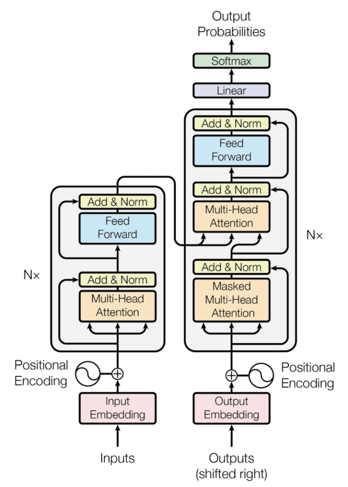
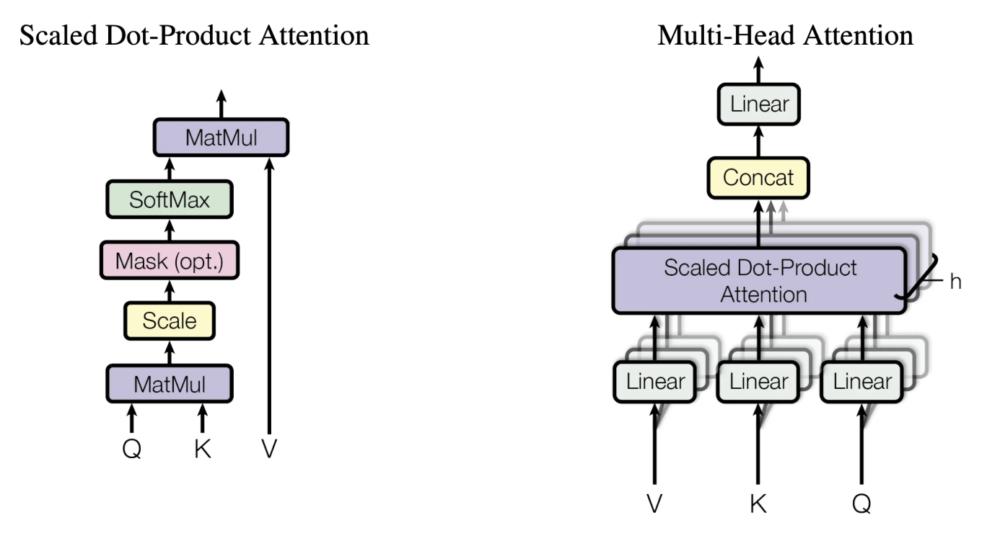
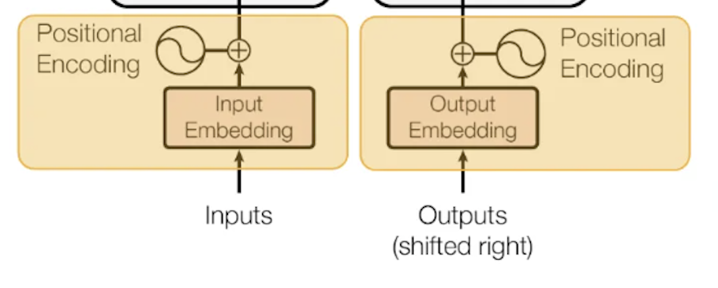
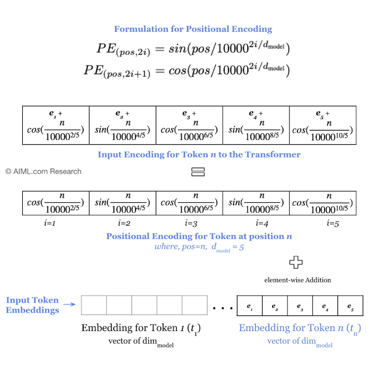
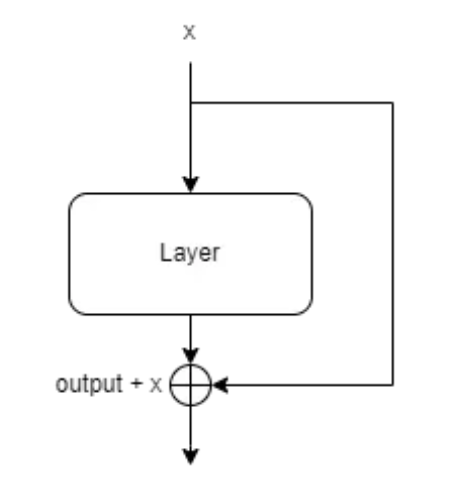
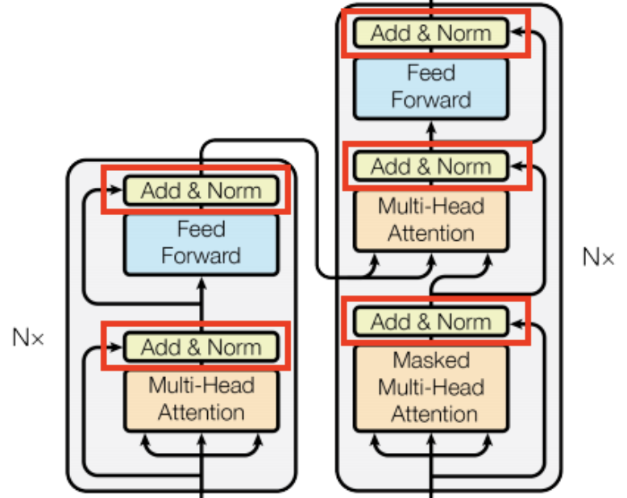
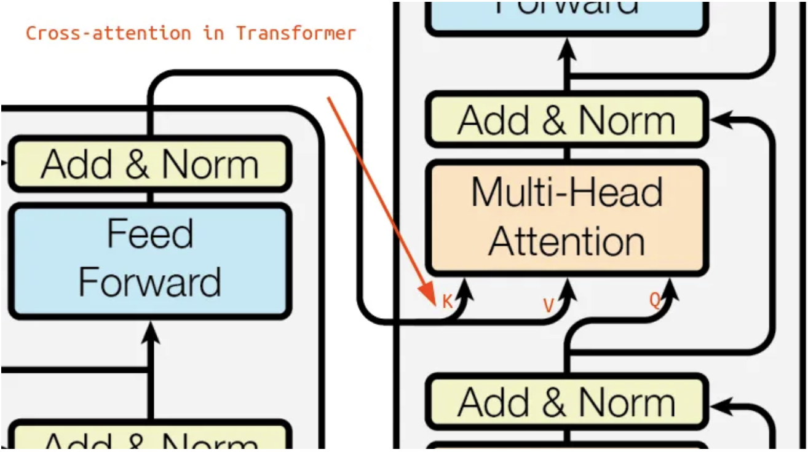
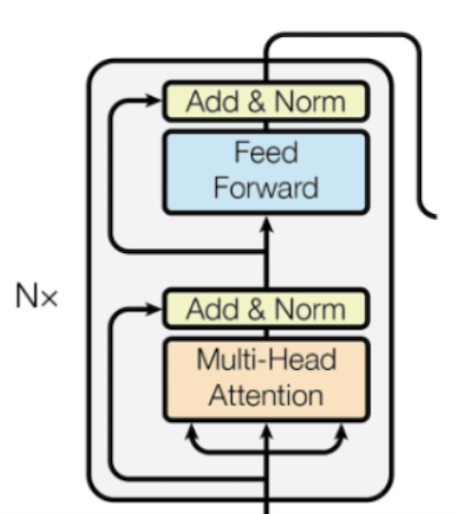
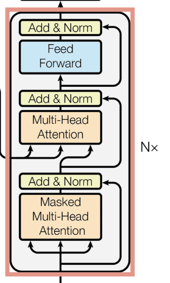

1. Lecture Objectives
This lecture introduces the Transformer architecture, which serves as the foundation of modern large language models and many recent advances in computer vision. Unlike earlier sequence models such as RNNs and LSTMs that process inputs sequentially, Transformers rely on attention mechanisms that allow the model to process all tokens simultaneously while still learning long-range dependencies.
We begin by examining the overall structure of the Transformer, including the encoder and decoder blocks and how information flows through these components. Particular emphasis is placed on understanding the self-attention mechanism, which allows the model to determine which parts of a sequence are most relevant when constructing contextual representations. We also study multi-head attention, which improves model expressiveness by allowing multiple attention operations to be learned in parallel.
Since Transformers do not inherently encode sequence order, we next introduce positional encodings, which provide information about token positions. We also examine important architectural components such as residual connections and layer normalization, which help stabilize training in deep networks.
Finally, we discuss how Transformers generate outputs through the decoding process and how they are trained using standard loss functions. The lecture concludes with an introduction to Vision Transformers (ViT), which extend the Transformer architecture to image data by treating image patches as tokens.
By the end of this lecture, students should understand the key components of the Transformer architecture, how attention enables contextual representation learning, and why Transformers have become a dominant architecture in modern machine learning.
2. The Transformer Architecture
2.1 Background and Motivation
The Transformer architecture was introduced in the influential paper “Attention Is All You Need” by Vaswani et al. (2017), which fundamentally changed how sequence modeling problems are approached in machine learning. The original motivation behind the Transformer was the problem of machine translation, where the goal is to convert a sentence from one language into another while preserving meaning and grammatical structure.
Before Transformers, most sequence modeling tasks relied on recurrent neural networks (RNNs) and LSTMs. While these models were effective at capturing sequential dependencies, they suffered from several important limitations. First, they process tokens sequentially, which prevents efficient parallel computation and leads to slow training. Second, learning long-range dependencies can be difficult due to vanishing gradient issues and information bottlenecks created by sequential state updates.
Transformers address these limitations by removing recurrence entirely and instead relying on attention mechanisms to model relationships between tokens. Rather than processing tokens one at a time, the Transformer processes the entire sequence simultaneously and directly computes relationships between all token pairs. This allows the model to learn long-range dependencies more effectively while also enabling highly efficient parallel training on modern hardware such as GPUs.
2.1.1 Why Attention Replaced Recurrence
A key conceptual shift introduced by Transformers is the replacement of recurrence with attention. In recurrent models, information must pass sequentially through intermediate states, which can make it difficult to preserve information across long distances. In contrast, attention allows any token to directly access information from any other token in a single operation.
This direct connectivity removes the information bottleneck present in RNNs and allows the model to better capture global relationships. Additionally, because attention relies on matrix operations rather than sequential computation, Transformers scale much more effectively to large datasets and model sizes.
2.2 Encoder–Decoder Structure
The original Transformer follows an encoder–decoder architecture, which is commonly used in sequence-to-sequence learning problems. The encoder is responsible for transforming the input sequence into a contextual representation, while the decoder uses this representation to generate the output sequence.
In the original design, the Transformer consists of multiple identical encoder layers stacked on top of each other, followed by multiple identical decoder layers. The original paper used six encoder layers and six decoder layers, although modern architectures often vary this number depending on the model size. Stacking multiple layers allows the model to progressively refine representations and learn increasingly abstract relationships between tokens.
Figure 1 illustrates the full Transformer architecture. The encoder stack is shown on the left, while the decoder stack is shown on the right. The arrows indicate how information flows through the model during both training and inference.

Conceptually, each encoder block performs three key operations:
Self-attention: determines how tokens influence each other
Feed-forward network: refines each token representation
Add & Norm: stabilizes training through residual learning
As shown in Figure 1, the input tokens are first converted into embeddings and combined with positional encodings. These representations are then passed through repeated encoder blocks consisting of self-attention and feed-forward layers. The encoder output serves as a contextual representation of the entire input sequence.
On the decoder side, the output sequence (shifted right during training) is also embedded and combined with positional encodings. The decoder first applies masked self-attention to model relationships between previously generated tokens. It then applies cross-attention to incorporate information from the encoder outputs. Finally, a linear layer followed by a softmax produces output probabilities over the vocabulary.
One important observation from the figure is the repeated use of Add & Norm blocks. These correspond to residual connections followed by layer normalization, which help stabilize training and allow gradients to propagate effectively through deep networks. The repeated stacked structure also highlights how Transformers build increasingly abstract representations as information flows upward through the network.
When interpreting this diagram, it is helpful to read it from bottom to top, since data flows upward through the network, and from left to right, since the encoder produces representations that guide the decoder.
2.2.1 Key Observations from the Architecture
Several important design principles can be observed from the Transformer architecture shown in Figure 1.
First, unlike RNN-based architectures, the Transformer allows all tokens to be processed in parallel within each layer. This is possible because attention replaces recurrence, allowing relationships between tokens to be computed through matrix operations rather than sequential state updates. This design greatly improves training efficiency and makes Transformers well suited for modern parallel hardware such as GPUs and TPUs.
Second, the architecture clearly separates the roles of the encoder and decoder. The encoder focuses on building a rich contextual representation of the input sequence, while the decoder focuses on generating outputs conditioned on both previous outputs and the encoded input representation. This separation allows the model to specialize different components for representation learning versus sequence generation.
Third, the stacked structure of the encoder and decoder highlights an important deep learning principle: deeper representations allow progressively more abstract features to be learned. Early layers may capture local or syntactic relationships, while deeper layers can capture more global or semantic relationships.
Finally, the repeated use of residual connections indicates the importance of stable optimization in deep architectures. Without these connections, training deep attention networks would be significantly more difficult due to gradient degradation. The residual pathways effectively allow layers to learn refinements to representations rather than completely new transformations, which improves training stability.
This parallel structure is also one of the main reasons Transformers scale effectively to very large datasets and models compared to recurrent architectures.
2.3 Input Representation: Tensors and Embeddings
Before data can be processed by a Transformer, it must be converted into numerical representations. In natural language processing tasks, this typically involves mapping words or tokens into vector representations known as embeddings. These embeddings may be learned jointly with the model or obtained from pretrained embedding methods.
Once tokens are converted into embeddings, they are organized into a matrix representation where each row corresponds to a token and each column corresponds to a feature dimension. This matrix representation allows the Transformer to efficiently apply matrix operations that compute attention and transformations across the entire sequence simultaneously.
The embeddings are then passed into the first encoder layer, where they are progressively transformed through attention and feed-forward operations. As representations move through the encoder stack, they become increasingly contextualized, meaning that each token representation gradually incorporates information from the rest of the sequence.
2.3.1 Encoder Block
Each encoder layer consists of two main computational stages. First, the input representations are processed by a self-attention mechanism that allows each token to gather information from every other token in the sequence. This enables the model to build contextual representations where the meaning of each token depends on the entire input sequence rather than only nearby tokens.
The output of the self-attention layer is then passed through a position-wise feed-forward neural network. This network is typically a small multilayer perceptron applied independently to each token representation. While the self-attention layer mixes information across tokens, the feed-forward network increases the representational power of each token individually by applying nonlinear transformations.
Together, these two components allow each encoder layer to first aggregate contextual information and then refine the resulting representations through learned nonlinear transformations.
2.3.2 Decoder Block
The decoder layer largely mirrors the encoder structure but includes an additional attention mechanism. In addition to its own self-attention layer, the decoder contains a cross-attention layer that allows it to attend to the encoder outputs. This enables the decoder to selectively focus on relevant parts of the input sequence when generating each output token.
Another important difference is that the decoder uses masked self-attention during training to ensure that predictions at a given position only depend on previously generated tokens. This preserves the autoregressive nature of sequence generation tasks such as translation and text generation. Intuitively, masking prevents the model from using future tokens that would not be available at inference time.
3. Self-Attention
3.1 Motivation
The goal of all language models is for a model to learn relevant associations between different parts of a sequence. Consider the sentence:
“The animal didn’t cross the street because it was too tired.”
What does “it” refer to? Attention is about learning associations to better encode dependencies in data. Self-attention allows the model to relate different positions of a single sequence in order to compute a contextual representation of the sequence.
Intuitively, self-attention allows each word to dynamically gather information from the most relevant words in the sentence rather than relying only on nearby context as in traditional sequential models.
3.2 Query, Key, and Value Vectors
For each input vector, the self-attention mechanism creates three vectors:
Query (Q) — “What am I looking for?” Represents the current word’s question about which other words it should attend to.
Key (K) — “What do I contain?” Represents a word’s label or identity, used for matching against queries.
Value (V) — “What information do I carry?” The actual content that gets passed forward, weighted by the attention scores.
These vectors are computed by multiplying the input embedding by three learned weight matrices:
\[\begin{aligned} Q &= X \cdot W_Q, \qquad K = X \cdot W_K, \qquad V = X \cdot W_V\end{aligned}\]
When processing the word “sat”:
\(Q\)() asks: “Who performed this action?”
\(K\)() answers: “I am a noun/subject.”
\(K\)() answers: “I am a location noun.”
The \(Q \cdot K\) score is highest for “cat” \(\rightarrow\) strong match
\(V\)() provides the semantic features that update the representation of “sat”
3.3 Why Separate Q, K, and V?
Why not use the same vector for both Q and K? If \(Q = K\), every word’s dot product with itself would always dominate, causing the model to mostly attend to itself. Separate projections allow the model to learn asymmetric relationships: “verbs look for subjects” is different from “subjects look for verbs.”
Key Insight — Asymmetric Attention:
Consider pronoun resolution: “it” should strongly attend to “animal,” but “animal” may not need to attend to “it.” Having separate \(W_Q\) and \(W_K\) matrices gives the model the freedom to learn these directional dependencies:
\[\text{Attention}(Q_1, K_2) \neq \text{Attention}(Q_2, K_1)\]
Why a Separate Value (V)?
This decouples:
how to match (\(Q \cdot K\))
what to retrieve (\(V\))
The information passed forward may differ from what is used for matching.
Query = Your search request: “I need a book about deep learning”
Key = The label on each book’s spine
Value = The actual book contents
The label used to find the book is not the same as the information inside the book
3.4 The Full Attention Formula
The attention function is defined as:
\[\boxed{ \text{Attention}(Q,K,V) = \text{softmax} \left( \frac{QK^\top}{\sqrt{d_k}} \right)V } \label{eq:attention}\]
Intuitively, this formula allows each token to compute a weighted combination of other tokens, where the weights reflect relevance.
Step-by-step breakdown:
Project inputs
Transform \(X\) into \(Q\), \(K\), and \(V\) using learned matrices.
Compute compatibility scores
\[\text{Score} = QK^\top\]
This computes the dot product between every query and key vector. (This is related to cosine similarity, but without normalization.)
Scale
Divide by \(\sqrt{d_k}\) to control magnitude growth as dimensionality increases. Without this scaling, large dot products could push softmax into very sharp distributions, reducing gradient stability.
Apply softmax
Convert scores into attention weights that sum to 1.
Weighted sum
Multiply weights by \(V\) to produce contextual representations.
Summary of roles:
\(QK^\top\) decides where to look
\(V\) decides what to retrieve
Softmax decides how much
3.5 Self-Attention Step by Step
3.5.1 Step 1: Compute Scores
We create scores between all word pairs by computing dot products between queries and keys. The score is typically highest when a word compares with itself, but may also be high for strongly related words.
3.5.2 Step 2: Scale and Softmax
Divide scores by \(\sqrt{d_k}\) and apply softmax. These normalized scores indicate how strongly each token should attend to every other token. Many such normalization operations in deep learning are designed to improve numerical stability and gradient flow.
3.5.3 Step 3: Weighted Sum of Values
Multiply each value vector by its attention weight and sum the results. This produces a new representation where each token now contains information from the most relevant tokens in the sequence.
3.5.4 Matrix Perspective
In practice, all vectors are computed simultaneously using matrix operations:
\[\text{Attention}(Q,K,V) = \text{softmax} \left( \frac{QK^\top}{\sqrt{d_k}} \right)V\]
This formulation allows efficient GPU implementation and parallel computation across all tokens.
One tradeoff of this design is computational cost. Self-attention requires computing interactions between all token pairs, resulting in \(O(n^2)\) complexity with respect to sequence length. This motivates many recent efforts to develop more efficient attention variants.
3.6 Why Self-Attention Works Well
Self-attention works well because it provides three important advantages over traditional sequence models:
Global context: Every token can directly access information from every other token.
Parallel computation: All tokens can be processed simultaneously rather than sequentially.
Dynamic receptive field: The model learns which tokens matter instead of relying on fixed window sizes.
These properties are key reasons Transformers outperform earlier sequence models on many tasks.
4. Multi-Head Attention
4.1 Motivation and Mechanism
Instead of performing a single attention computation, multi-head attention uses multiple self-attention operations in parallel and combines their outputs. This expands the model’s ability to focus on different positions and different types of relationships simultaneously.
Intuitively, a single attention head must compress all relationships into one attention map. Multi-head attention allows the model to learn multiple attention patterns at once, enabling it to simultaneously capture syntactic structure, semantic relationships, and positional dependencies.
Each attention head creates a different representation subspace for the same input sequence. Different attention heads can therefore learn different weighting strategies. For example, one head may focus on subject–verb relationships, another may track positional structure, and another may capture semantic similarity.

As illustrated in Figure 2, single-head attention performs one attention computation over the full representation space. This forces the model to encode all relationships into a single attention map.
Multi-head attention instead projects the inputs into multiple lower-dimensional subspaces and performs attention independently in each one. These parallel attention heads can focus on different types of relationships, after which their outputs are concatenated and combined.
Conceptually, this allows the model to learn multiple similarity functions simultaneously rather than relying on a single notion of similarity.
4.2 Formal Definition
Given \(h\) attention heads, each head \(i\) computes:
\[\text{head}_i = \text{Attention} ( QW_i^Q,\; KW_i^K,\; VW_i^V )\]
where:
\[W_i^Q \in \mathbb{R}^{d_{\text{model}}\times d_k}, \quad W_i^K \in \mathbb{R}^{d_{\text{model}}\times d_k}, \quad W_i^V \in \mathbb{R}^{d_{\text{model}}\times d_v}\]
are learned projection matrices for head \(i\).
Each head operates on lower-dimensional projections of the input. Typically:
\[d_k = d_v = \frac{d_{\text{model}}}{h}\]
This keeps the total computational cost similar to single-head attention while increasing representational flexibility.
4.2.1 Dimension Flow in Multi-Head Attention
It is helpful to understand how dimensions change through multi-head attention:
\[d_{\text{model}} \;\rightarrow\; h \text{ heads each of size } d_{\text{model}}/h \;\rightarrow\; \text{concatenate} \;\rightarrow\; d_{\text{model}}\]
Thus, instead of one large attention computation, the model performs several smaller attention computations whose outputs are later recombined.
The outputs of all heads are concatenated and linearly projected:
\[\text{MultiHead}(Q,K,V) = \text{Concat} ( \text{head}_1, \ldots, \text{head}_h ) W^O\]
where:
\[W^O \in \mathbb{R}^{h d_v \times d_{\text{model}}}\]
is a learned output projection matrix.
4.3 Why Multi-Head Attention Outperforms Single Head
Multi-head attention improves performance for several important reasons.
First, it increases expressivity. A single attention head must learn one attention pattern that captures all relationships. Multi-head attention allows different heads to specialize in different relationships, such as syntax, semantics, or positional structure.
Second, it improves representation learning. By projecting into multiple lower-dimensional subspaces, the model can learn diverse feature transformations rather than relying on a single representation space.
Third, it improves optimization stability. Multiple smaller attention heads often train more reliably than one large attention mechanism because each head learns a simpler subproblem.
Finally, multi-head attention can be viewed as learning multiple similarity metrics in parallel. Instead of computing attention with a single similarity function, the model learns several distinct similarity measures and combines them.
4.4 Why Multi-Head Attention Works Well
Multi-head attention provides several advantages:
Multiple relationship modeling: Different heads can focus on different types of dependencies.
Improved representation power: Splitting attention into multiple subspaces allows richer feature extraction.
Stable learning: Multiple smaller attention heads often train more reliably than one large attention mechanism.
Empirical studies of trained Transformers show that different heads often specialize in different linguistic or structural patterns, although this specialization emerges automatically during training.
Conceptually, multi-head attention can be viewed as allowing the model to "look at the sequence from multiple perspectives" before forming a final representation.
5. Positional Encodings
5.1 Why Positional Information Is Needed
Unlike RNNs, Transformers process all tokens simultaneously and therefore have no inherent notion of sequence order. Self-attention alone treats the input as a set rather than a sequence unless positional information is explicitly provided.
Therefore, positional information must be injected so the model can distinguish sequences such as:
"dog bites man" vs "man bites dog"
Although the same words appear, the ordering completely changes the meaning.
To address this limitation, Transformers add a positional encoding vector to each token embedding. This provides information about where each token appears in the sequence while still preserving parallel computation.
5.2 Design Principles
There are many possible ways to encode position. A good positional encoding should:
Allow the model to distinguish token order
Allow the model to reason about relative distance
Generalize to sequence lengths not seen during training
Integrate smoothly with learned embeddings
The original Transformer uses deterministic sinusoidal positional encodings:
\[\begin{aligned} PE_{(\text{pos}, 2i)} &= \sin \left( \frac{\text{pos}}{10000^{2i/d_{\text{model}}}} \right) \\[6pt] PE_{(\text{pos}, 2i+1)} &= \cos \left( \frac{\text{pos}}{10000^{2i/d_{\text{model}}}} \right)\end{aligned}\]
where:
\(\text{pos}\) = token position
\(i\) = embedding dimension index
\(d_{\text{model}}\) = embedding dimension
These encodings are added element-wise to the token embeddings before entering the Transformer encoder.
5.3 How Positional Encodings Are Used
Figure 4 illustrates both how positional encodings are integrated into the Transformer architecture and how sinusoidal encodings are constructed mathematically.

(a) Positional encoding added to embeddings

(b) Sinusoidal positional encoding construction
5.4 Why Sinusoidal Encodings Work
Sinusoidal encodings were chosen because they provide smooth position representations across multiple frequency scales.
Lower embedding dimensions encode coarse position information while higher dimensions encode finer positional differences.
A key advantage is that relative position can be inferred from linear relationships:
\[PE(\text{pos}+k) \text{ can be expressed as a linear function of } PE(\text{pos})\]
This allows the model to learn relationships such as distance between tokens.
Another advantage is that sinusoidal encodings generalize to sequence lengths longer than those seen during training because they are deterministic rather than learned parameters.
5.5 Why Positional Encodings Are Added Instead of Concatenated
Transformers add positional encodings instead of concatenating them:
\[\text{Input Representation} = \text{Token Embedding} + \text{Positional Encoding}\]
This has two advantages:
Keeps representation dimensionality fixed
Allows semantic and positional information to interact naturally
Conceptually, each embedding simultaneously represents:
What the token means
Where the token appears
5.6 Alternative Positional Encoding Methods
Modern Transformer variants sometimes use learned positional embeddings instead of sinusoidal encodings. Other approaches include relative positional encodings, which allow models to reason about distances between tokens instead of absolute positions.
These alternatives often improve performance for long-context tasks.
6. Training Regularization: Residual Connections and Layer Normalization
Beyond attention mechanisms, Transformers rely on architectural design choices that stabilize training and improve optimization. Two of the most important components are residual connections and layer normalization.
Together, these mechanisms allow very deep Transformer networks to train efficiently while maintaining stable feature representations.
6.1 Residual Connections
Deep neural networks often suffer from optimization difficulties such as vanishing gradients and representation degradation. Transformers address these issues using residual connections (also called skip connections), which allow information to flow directly across layers.
A residual connection allows a layer to learn a correction to its input rather than a completely new transformation.

Instead of learning a full transformation, the network learns a residual correction:
\[\text{SubLayer}(X) \approx F(X)\]
so the layer learns:
\[X + F(X)\]
This makes optimization easier because the model only needs to learn small refinements rather than entirely new representations. If the optimal mapping is close to the identity function, the network can simply learn a small residual correction instead of relearning the identity mapping.
6.2 Residual Structure in the Transformer Block
Transformers extend this idea by wrapping each sublayer with both a residual connection and normalization. For each Transformer sublayer (self-attention or feed-forward), the output is computed as:
\[\text{Output} = \text{LayerNorm} ( X + \text{SubLayer}(X) )\]
Each Transformer encoder block therefore contains two residual structures:
\[\begin{aligned} Z_1 &= \text{LayerNorm}(X + \text{MultiHeadAttention}(X)) \\ Z_2 &= \text{LayerNorm}(Z_1 + \text{FeedForward}(Z_1))\end{aligned}\]
This structure ensures that information can bypass both the attention and feed-forward components, allowing stable feature propagation even as networks become very deep.
As illustrated in Figure 6, every Transformer sublayer is wrapped with an Add & Norm structure consisting of a residual connection followed by layer normalization.

6.3 Why Residual Connections Work
Residual connections provide several important benefits:
Improved gradient propagation: Skip connections create shorter gradient paths, allowing gradients to flow directly across layers and reducing vanishing gradient effects.
Prevention of representation degradation: Without residual connections, deeper networks sometimes perform worse than shallower ones. Residual paths help preserve useful representations across layers.
Implicit identity mappings: If a deeper layer is unnecessary, the network can learn to output values close to zero so that the residual connection effectively passes the input forward unchanged.
More stable optimization: Learning residual refinements instead of full transformations simplifies the optimization landscape and improves convergence behavior.
Conceptually, residual connections allow layers to answer:
"What small improvement should I make to the current representation?"
rather than:
"What completely new representation should I construct?"
This significantly improves training behavior and convergence.
6.4 Pre-Norm vs Post-Norm Architectures
The original Transformer uses post-normalization:
\[\text{LayerNorm}(X + \text{SubLayer}(X))\]
Many modern implementations instead use pre-normalization:
\[X + \text{SubLayer}(\text{LayerNorm}(X))\]
Pre-norm often improves stability for very deep Transformers because normalization occurs before nonlinear transformations, which helps maintain well-scaled activations throughout the network.
Post-norm more closely follows the original architecture, while pre-norm is often preferred in modern large-scale models due to improved training stability.
6.5 Why Add Comes Before Normalization
The residual addition is performed before normalization because normalization stabilizes the combined signal rather than the sublayer output alone.
This ensures:
Stable feature magnitudes: Normalization keeps the combined residual signal within a consistent numerical range.
Consistent scaling across layers: Layer normalization prevents feature values from growing or shrinking excessively as depth increases.
Improved gradient behavior: Stable feature magnitudes improve gradient conditioning and make optimization easier.
Thus, the Add & Norm structure acts as both a stabilization and regularization mechanism.
6.6 Layer Normalization
Batch normalization is less suitable for sequence models because token statistics vary across positions and sequence lengths. Instead, Transformers use layer normalization, which normalizes across feature dimensions independently for each token.
Layer normalization computes:
\[\text{LayerNorm}(x) = \gamma \frac{x - \mu}{\sqrt{\sigma^2 + \epsilon}} + \beta\]
where:
\(\mu\) = mean across feature dimensions
\(\sigma^2\) = variance across feature dimensions
\(\gamma,\beta\) = learned scale and shift parameters
Unlike batch normalization, layer normalization does not depend on batch statistics and therefore behaves consistently during both training and inference.
6.7 Layer Normalization vs Batch Normalization
Key differences include:
Normalization axis: Batch normalization normalizes across the batch dimension, while layer normalization normalizes across feature dimensions.
Dependence on batch statistics: Batch normalization depends on batch statistics, which can introduce instability when batch sizes are small.
Small batch compatibility: Layer normalization works well even with batch size one, which is common in sequence modeling.
Inference behavior: Batch normalization requires stored running statistics, while layer normalization behaves identically during training and inference.
Because sequence models often use variable-length inputs and small batch sizes, layer normalization is typically preferred.
6.8 Dropout as Additional Regularization
Transformers also use dropout as an additional regularization mechanism. Dropout is typically applied:
After attention outputs: This prevents attention heads from over-specializing.
After feed-forward layers: This improves generalization of learned feature transformations.
After positional embeddings: This reduces overfitting to positional patterns.
Within residual paths: This improves robustness of the residual signal.
Dropout helps prevent overfitting by randomly disabling neurons during training and encouraging robust feature learning.
6.9 Combined Effect on Training Stability
Together, residual connections, layer normalization, and dropout:
Stabilize feature magnitudes by controlling activation scale
Improve gradient flow through skip connections
Enable deep architectures without degradation
Improve convergence speed through better conditioning
Reduce optimization difficulty through residual learning
Improve generalization through dropout regularization
These architectural design choices are essential for making modern Transformer models train reliably at scale.
7. Cross-Attention
Self-attention is used when the queries, keys, and values all originate from the same sequence. However, many tasks require modeling relationships between two different sequences. In these cases, Transformers use cross-attention.
Cross-attention allows one sequence to attend to another sequence. This is particularly important in encoder–decoder architectures such as machine translation, where the decoder must selectively retrieve relevant information from the encoder output.
7.1 Motivation
Cross-attention enables the model to answer the question:
"Which parts of the input sequence are most relevant for producing the next output token?"
Instead of only reasoning within a single sequence (self-attention), cross-attention allows information to flow between sequences.
Common applications include:
Machine translation, where the decoder attends to encoder representations
Image captioning, where text tokens attend to visual features
Multimodal models combining text, vision, and audio
Retrieval-augmented generation, where queries attend to external documents
7.2 Cross-Attention Mechanism
Cross-attention uses the same attention formula (Eq. [eq:attention]) as self-attention, but the inputs come from different sources:
Key (K) and Value (V): These come from the encoder output and represent the contextual information extracted from the input sequence.
Query (Q): This comes from the decoder and represents what information the decoder currently needs in order to generate the next token.
Thus, the decoder effectively searches the encoder representations for relevant information.
Mathematically:
\[\text{CrossAttention}(Q,K,V) = \text{softmax} \left( \frac{QK^\top}{\sqrt{d_k}} \right) V\]
The only difference from self-attention is the source of \(Q\), \(K\), and \(V\).
7.3 Cross-Attention in the Transformer Architecture
Cross-attention appears in the Transformer decoder between masked self-attention and the feed-forward network. The full decoder layer structure is therefore:
Masked Self-Attention \(\rightarrow\) Cross-Attention \(\rightarrow\) Feed Forward
As shown in Figure 7, the decoder queries the encoder outputs through cross-attention. The encoder provides keys and values, while the decoder provides queries.

This structure allows the decoder to dynamically focus on different parts of the input sequence as each output token is generated.
7.4 Self-Attention vs Cross-Attention
The main differences between the two attention types are:
Self-attention: \(Q\), \(K\), and \(V\) all come from the same sequence. This allows tokens to model internal relationships within the sequence.
Cross-attention: \(Q\) comes from one sequence while \(K\) and \(V\) come from another. This allows one sequence to retrieve information from another sequence.
Conceptually:
Self-attention answers:
"How do tokens in this sequence relate to each other?"
Cross-attention answers:
"Which input information is most useful for generating this output token?"
7.5 Example: Machine Translation
The following example illustrates how cross-attention operates during translation.
Encoder source: “Je suis étudiant” (French)
Decoder target: “I am a _” (English, being generated)
\(K\) and \(V\) are derived from the encoder’s output for the French sentence.
\(Q\) is derived from the decoder’s current state for the English sentence.
Cross-attention: \(\text{softmax}(Q \cdot K^\top / \sqrt{d_k}) \cdot V\)
During this process, the decoder query may place high attention weight on the encoder token “étudiant” when predicting the word “student”. This allows the model to learn alignment between input and output words automatically.
7.6 Intuition Behind Cross-Attention
Cross-attention can be interpreted as a soft retrieval mechanism. The decoder forms a query representing its current informational need, and the encoder provides a searchable memory of the input sequence.
Thus, cross-attention acts as:
"A differentiable lookup operation over encoder representations."
This mechanism allows the model to dynamically retrieve relevant information at each decoding step instead of compressing all information into a fixed vector.
7.7 Why Cross-Attention Is Important
Cross-attention is essential because it:
Enables interaction between encoder and decoder representations
Allows conditional generation based on input sequences
Supports multimodal reasoning across different data types
Enables dynamic retrieval of relevant context
Improves alignment between input and output tokens
Without cross-attention, the decoder would be forced to rely on a fixed representation of the input, which would significantly reduce performance on complex sequence tasks.
8. Encoding
8.1 Encoder Structure in Context of the Full Transformer
Figure 1 shows the complete Transformer architecture. The encoder is the left stack of repeated blocks that process the input sequence into contextual representations.
Each encoder layer transforms the input embeddings into higher-level representations by allowing tokens to exchange information through attention.
The encoder performs three key functions:
Learning contextual relationships between tokens
Building hierarchical feature representations
Producing representations usable by the decoder
The encoder can therefore be viewed as a feature extractor for sequences.
8.2 Architecture Components
To better understand the encoder, we now zoom into a single encoder block, shown in Figure 8.

As illustrated in Figure 8, each Transformer encoder block consists of the following components:
Multi-Head Self-Attention
This module allows each token to attend to all other tokens in the sequence. This enables modeling of long-range dependencies that would be difficult for RNNs.
Instead of processing tokens sequentially, attention allows every token to directly exchange information with every other token.
Residual Connection and Layer Normalization
The output of the attention block is added to the original input through a residual connection and normalized to stabilize training:
\[\text{LayerNorm}(X + \text{Attention}(X))\]
This improves gradient flow and prevents degradation in deep networks.
Feed-Forward Network (MLP)
A position-wise fully connected network transforms each token representation independently:
\[\text{FFN}(x) = \max(0, xW_1 + b_1)W_2 + b_2\]
This allows nonlinear transformation of token features.
Residual Connection and Layer Normalization
The feed-forward output is again combined with the input through another residual connection:
\[\text{LayerNorm}(X + \text{FFN}(X))\]
This second residual pathway further stabilizes training.
These components form a single encoder block. Multiple such blocks are stacked to increase model capacity.
8.3 Stacking Encoder Layers
The encoder consists of \(L\) identical layers stacked sequentially:
\[H^{(l+1)} = \text{EncoderBlock}(H^{(l)})\]
where:
\(H^{(0)}\) = input embeddings
\(H^{(L)}\) = final encoder output
Stacking allows the model to progressively refine representations, similar to depth in CNNs.
Lower layers often capture:
Local relationships
Basic syntactic structure
Higher layers often capture:
Semantic meaning
Long-range dependencies
Global structure
8.4 Comparison: RNNs vs Transformers
Traditional RNNs process sequences sequentially through hidden state updates, while Transformers process sequences in parallel using attention.
| RNNs | Transformers |
|---|---|
| Sequential hidden state updates | Parallel token processing |
| Information flows through time steps | Information flows through attention |
| Vanishing gradient challenges | Stable gradient flow via residuals |
| Limited long-range memory | Direct long-range interactions |
| State transition matrices (\(U,W,V\)) | Attention projection matrices (\(Q,K,V\)) |
| Recurrence-based modeling | Attention-based modeling |
The key innovation of Transformers is replacing recurrence with attention, enabling both parallelization and better modeling of long-range dependencies.
8.5 Self-Attention as Contextual Representation Learning
The self-attention mechanism allows each token to compute a weighted combination of all other tokens:
\[\text{Attention}(x_i) = \sum_j \alpha_{ij} x_j\]
where attention weights \(\alpha_{ij}\) measure relevance between tokens.
This enables:
Context-aware representations
Dynamic feature aggregation
Long-range interaction modeling
Global context reasoning
Multi-head attention extends this by allowing multiple attention patterns to be learned simultaneously. Each head can specialize in different relationships such as:
Syntax relationships
Positional relationships
Semantic relationships
Structural dependencies
8.6 Why the Encoder Matters
The encoder is critical because it determines the quality of representations passed to the decoder or classification head.
Good encoder representations should:
Capture relevant context
Preserve important relationships
Discard irrelevant noise
Generalize across tasks
Thus, much of the Transformer’s power comes from the strength of its encoder representations.
8.6.1 Encoder–Decoder Information Flow
Conceptually, the encoder builds contextual representations of the input sequence, while the decoder consumes these representations to generate outputs conditioned on both prior outputs and encoded inputs.
9. Decoding
9.1 Decoder Architecture Overview
The Transformer decoder consists of a stack of identical layers. Each decoder layer contains three main components:
Masked multi-head self-attention
Cross-attention with the encoder output
Position-wise feed-forward network
Each of these components is wrapped with residual connections and layer normalization (Add & Norm), which stabilizes training and improves gradient flow.
Figure 9 shows the structure of a single decoder block.

The masked self-attention ensures that predictions at position \(t\) only depend on tokens before position \(t\), preserving the autoregressive property of sequence generation.
9.2 Decoder Input
The output of the top encoder layer is transformed into attention vectors \(K\) and \(V\). These vectors provide contextual representations of the input sequence and are passed into each decoder block through the cross-attention mechanism.
The decoder operates in an autoregressive manner, meaning that previously generated outputs are used as inputs for generating future tokens. At each time step, the decoder produces one token conditioned on all previously generated tokens.
The decoding process follows these steps:
The decoder receives previously generated tokens (or ground-truth tokens during training).
These tokens are converted into embeddings and passed through masked self-attention layers.
Cross-attention allows the decoder to retrieve relevant information from the encoder output.
Feed-forward layers refine the representation.
The decoder produces a representation used to predict the next token.
The predicted token is then fed back into the decoder for the next step.
This process continues until a special end-of-sequence (EOS) token is generated.
Thus, the decoder learns to model the conditional probability:
\[P(y_1, y_2, \ldots, y_T \mid X) = \prod_{t=1}^{T} P(y_t \mid y_1,\ldots,y_{t-1},X)\]
where \(X\) is the encoder input sequence.
9.3 Teacher Forcing vs Inference Decoding
During training and inference, the decoder operates slightly differently.
During training (teacher forcing):
The decoder receives the ground-truth previous tokens.
This allows parallel computation across the sequence.
A masked attention matrix prevents access to future tokens.
During inference (generation):
The decoder receives its own previously generated outputs.
Tokens are generated one step at a time.
The process is inherently sequential.
This distinction allows efficient training while still enabling sequential generation at inference time.
9.4 Final Layer and Softmax
The output of the decoder stack is passed through a linear projection layer (a fully connected layer) that maps the hidden representation into a vector with dimensionality equal to the vocabulary size.
Formally:
\[z = W h + b\]
where:
\(h\) is the decoder output vector
\(W\) is the projection matrix
\(b\) is a bias vector
\(z\) are the vocabulary logits
These logits are then converted into probabilities using the softmax function:
\[P(\text{word}_i) = \text{softmax}(z_i) = \frac{e^{z_i}} {\sum_{j=1}^{|V|} e^{z_j}}\]
This produces a probability distribution across all vocabulary tokens.
Each entry in this probability vector may represent:
Words
Subword tokens (BPE or WordPiece)
Characters
Punctuation
Special tokens (BOS, EOS, PAD)
The predicted token is typically selected using:
Greedy decoding (highest probability)
Beam search
Sampling strategies (top-k or nucleus sampling)
9.5 Loss Function for Training
The Transformer is trained using cross-entropy loss, which measures how well the predicted probability distribution matches the ground-truth distribution.
For one token:
\[\mathcal{L} = -\sum_{i=1}^{|V|} y_i \log \hat{y}_i\]
where:
\(|V|\) is the vocabulary size
\(y_i\) is the one-hot encoded ground-truth token
\(\hat{y}_i\) is the predicted probability
Because \(y\) is one-hot encoded, this simplifies to:
\[\mathcal{L} = - \log \hat{y}_{\text{true}}\]
meaning the loss only depends on the probability assigned to the correct token.
For a full sequence:
\[\mathcal{L} = -\sum_{t=1}^{T} \log P(y_t \mid y_1,\ldots,y_{t-1},X)\]
This objective encourages the model to assign high probability to correct next tokens.
9.6 Sequence Shifting During Training
During training, the decoder input sequence is shifted relative to the target sequence.
Example:
Target sequence: \[\text{BOS I am a student EOS}\]
Decoder input: \[\text{BOS I am a student}\]
Prediction targets: \[\text{I am a student EOS}\]
This shift ensures the model learns next-token prediction.
9.7 Why Autoregressive Decoding Works
Autoregressive decoding works because language naturally follows conditional structure:
\[P(sentence) = P(word_1) P(word_2|word_1) P(word_3|word_1,word_2)\]
Transformers explicitly model this factorization.
Advantages include:
Flexible sequence generation
Variable-length outputs
Strong contextual modeling
Alignment with probabilistic language modeling
9.8 Summary of the Decoding Pipeline
The complete decoding process can be summarized as:
Encoder processes input sequence.
Decoder receives previous tokens.
Masked self-attention models output dependencies.
Cross-attention retrieves encoder information.
Feed-forward layers refine representations.
Linear projection maps to vocabulary.
Softmax produces probabilities.
Next token is selected.
Process repeats until EOS.
10. Vision Transformers (ViT)
Vision Transformers (ViT) adapt the Transformer architecture for image processing by representing images as sequences. The central idea is to divide an image into small patches and treat these patches similarly to tokens in natural language processing.
Instead of applying convolutional filters as in CNNs, ViT applies self-attention across image patches to learn global relationships between different regions of the image.
Depending on the application, the final embedding may be passed into:
An MLP classifier (image classification)
A decoder (segmentation)
A detection head (object detection)
A reconstruction module (self-supervised learning)
Figure 10 illustrates the overall Vision Transformer pipeline.

10.1 Step 1: Patchify
The first step is to divide the input image into fixed-size patches. Each patch acts as a token in the Transformer sequence.
For example, a \(224 \times 224\) image divided into \(16 \times 16\) patches produces:
\[\frac{224}{16} \times \frac{224}{16} = 14 \times 14 = 196 \text{ patches}\]
In general, for an image of size \(H \times W\) and patch size \(P\):
\[N = \frac{H \times W}{P^2}\]
where:
\(H,W\) are image dimensions
\(P\) is patch size
\(N\) is number of patches
Each patch contains spatial information and local visual structure such as edges, textures, and color patterns.
Conceptually:
CNNs process pixels locally with convolution. ViT processes patches globally with attention.
10.2 Step 2: Linear Projection
Each patch is flattened into a vector and projected into an embedding space.
If a patch has size:
\[P \times P \times C\]
then flattening produces a vector of dimension:
\[P^2 C\]
This vector is projected into a \(D\)-dimensional embedding:
\[z_i = x_i^{\text{patch}} E\]
where:
\[E \in \mathbb{R}^{P^2 C \times D}\]
and:
\(C\) = number of channels
\(D\) = embedding dimension
\(E\) = learned projection matrix
Although written as a matrix multiplication, this operation is often implemented as a convolution with kernel size \(P\) and stride \(P\) for computational efficiency.
This step converts raw pixel patches into feature representations suitable for Transformer processing.
10.3 Step 3: Position Embeddings
Because Transformers do not inherently encode spatial structure, positional information must be added manually.
This is done by adding learned positional embeddings:
\[z_i' = z_i + E_{\text{pos}}^{(i)}\]
where:
\(z_i\) is the patch embedding
\(E_{\text{pos}}^{(i)}\) is the position embedding
This allows the model to distinguish:
Top vs bottom patches
Left vs right regions
Relative spatial structure
A special learnable [CLS] token is also added to the beginning of the sequence. This token aggregates global information across all patches through attention.
Thus the input sequence becomes:
\[[\texttt{CLS}, z_1, z_2, \ldots, z_N]\]
The CLS token acts as a global summary representation of the image.
10.4 Step 4: Self-Attention in ViT
The patch embeddings are then processed using the standard Transformer encoder.
Each encoder layer consists of:
Multi-head self-attention
Feed-forward network
Residual connections
Layer normalization
The same attention mechanism is applied:
\[\text{Attention}(Q,K,V) = \text{softmax} \left( \frac{QK^\top}{\sqrt{d_k}} \right)V\]
Unlike CNNs, where receptive fields grow gradually, self-attention allows every patch to immediately interact with every other patch.
Advantages include:
Global receptive field from the first layer
Flexible feature interactions
Better modeling of long-range dependencies
No locality bias from convolution
For a \(224 \times 224\) image with \(16 \times 16\) patches:
\[196 + 1 = 197 \text{ tokens}\]
Each typically has dimension:
\[D = 768\]
10.5 Step 5: Classification
After passing through the encoder stack, the CLS token contains a global representation of the image.
This representation is passed into an MLP classification head:
\[y = \text{MLP}(z_{CLS})\]
The MLP typically consists of:
Linear layer
GELU or ReLU activation
Optional dropout
Final classification layer
The output is then passed through softmax to produce class probabilities.
The CLS token works because attention allows it to gather information from all patches during encoding.
10.6 Why Vision Transformers Work
Vision Transformers succeed because they:
Capture global image relationships
Scale well with large datasets
Avoid handcrafted convolution biases
Benefit from transfer learning
Work well with self-supervised learning
However, they also require:
Large datasets
Significant compute
Careful regularization
10.7 ViT vs CNNs
Key differences include:
CNNs use local convolutional filters
ViT uses global attention
CNNs have inductive bias toward locality
ViT learns spatial relationships from data
CNNs work better on small datasets
ViT scales better with large data
11. Summary
This section summarizes the main architectural ideas behind Transformers and their extensions to vision tasks. The key theme across these components is replacing sequential processing with attention-based parallel computation.
The Transformer architecture replaces recurrence with self-attention, enabling parallel processing of entire sequences and improved modeling of long-range dependencies.
Self-attention computes contextual representations by learning Query, Key, and Value projections from input embeddings, allowing tokens to dynamically exchange information.
The attention formula \(\text{Attention}(Q,K,V) = \text{softmax}(QK^\top / \sqrt{d_k})V\) serves as the fundamental computation that enables context-aware feature learning.
Multi-head attention performs multiple attention computations in parallel, allowing the model to capture different types of relationships such as syntactic, semantic, and positional dependencies.
Positional encodings provide sequence order information that would otherwise be absent in the permutation-invariant attention mechanism.
Cross-attention connects the encoder and decoder, enabling conditional generation by allowing the decoder to retrieve relevant contextual information from encoder representations.
Residual connections and layer normalization stabilize training, improve gradient flow, and enable deep Transformer architectures.
The decoder operates autoregressively, generating tokens sequentially by predicting the next token conditioned on previous outputs and minimizing cross-entropy loss.
Vision Transformers (ViT) extend the Transformer encoder to images by converting images into patch sequences, projecting them into embeddings, and applying standard self-attention.
ViT demonstrates that Transformers can match or surpass CNNs on vision tasks when trained on sufficiently large datasets and with appropriate regularization.
Overall, Transformers demonstrate that attention mechanisms alone can serve as a powerful foundation for sequence modeling, replacing recurrence and convolution while enabling scalable and flexible architectures across language and vision domains.
13. References
Vaswani, A., Shazeer, N., Parmar, N., Uszkoreit, J., Jones, L., Gomez, A. N., Kaiser, Ł., & Polosukhin, I. (2017). Attention is all you need. Advances in Neural Information Processing Systems, 30.
Alammar, J., & Grootendorst, M. (2024). Hands-on Large Language Models: Language Understanding and Generation. O’Reilly Media, Inc.
Dosovitskiy, A., Beyer, L., Kolesnikov, A., Weissenborn, D., Zhai, X., Unterthiner, T., Dehghani, M., Minderer, M., Heigold, G., Gelly, S., Uszkoreit, J., & Houlsby, N. (2020). An image is worth 16x16 words: Transformers for image recognition at scale. arXiv preprint arXiv:2010.11929.
Ba, J. L., Kiros, J. R., & Hinton, G. E. (2016). Layer normalization. arXiv preprint arXiv:1607.06450.